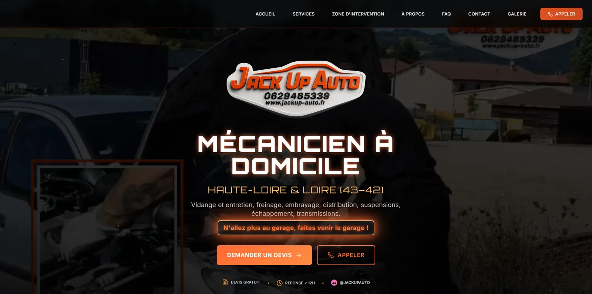
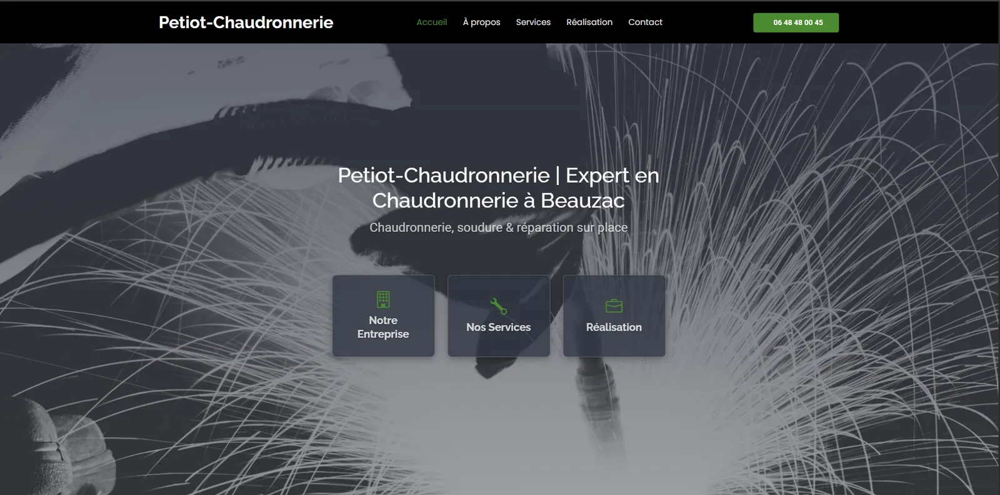
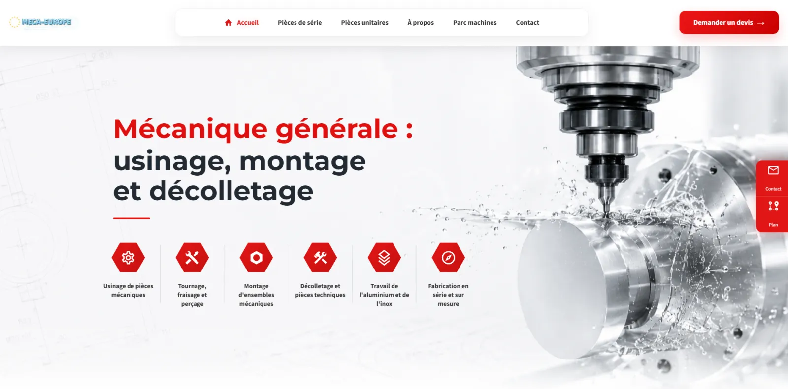

Des outils simples pour faire gagner du temps à votre entreprise.
Sites vitrines sur mesure, automatisation de tâches, Excel, collecte de données et petits logiciels adaptés aux artisans, indépendants, garages, petites industries et PME.
- Environ 40 à 50 km autour de Beauzac
- Projets à distance partout en France
- Un interlocuteur unique
Votre problème d’abord. La technique ensuite.
Vous n’avez pas besoin de savoir s’il faut une macro, une API ou un autre outil. Montrez simplement la tâche ou le blocage : je cherche la solution la plus claire et la plus proportionnée.
Sites vitrines
Vous n’avez pas encore de site, ou votre site actuel ne montre plus la qualité de votre travail ? Je crée un site vitrine clair, rapide et adapté à votre entreprise.
Découvrir le serviceHébergement & maintenance
Votre site doit rester accessible, rapide et à jour sans devenir une nouvelle tâche à gérer. Je peux m’occuper de son hébergement et de son suivi technique.
Découvrir le serviceAutomatisation
Vous répétez les mêmes clics, saisies ou copier-coller tous les jours ? Commençons par observer votre façon de travailler, puis automatisons seulement ce qui vous fait réellement perdre du temps.
Découvrir le serviceAutomatisations n8n
Vous recevez une information dans un outil puis devez la recopier dans un autre ? Un scénario automatique peut parfois enchaîner ces actions à votre place.
Découvrir le serviceCollecte de données web
Vous consultez régulièrement plusieurs pages pour recopier des tarifs, références ou informations ? Dans certains cas, ces données peuvent être récupérées, nettoyées et rangées automatiquement.
Découvrir le serviceOutils sur mesure
Vous avez une idée précise mais aucun logiciel existant ne correspond vraiment ? Un petit outil ciblé peut résoudre un problème sans devenir un projet énorme.
Découvrir le serviceAPI & intégrations
Deux outils que vous utilisez ne communiquent pas entre eux ? Il est parfois possible de créer un petit pont pour récupérer ou envoyer les informations automatiquement.
Découvrir le serviceBases de données
Vos clients, références ou historiques sont dispersés dans plusieurs fichiers ? Je peux vous aider à les regrouper, les nettoyer et les rendre plus faciles à rechercher.
Découvrir le serviceExcel & macros
Vous ouvrez le même fichier, supprimez des colonnes, classez les lignes puis créez un nouvel export ? Ces manipulations peuvent souvent être regroupées derrière un bouton.
Découvrir le serviceIA en entreprise
Vous recevez des documents ou des e-mails difficiles à traiter avec des règles classiques ? Une intelligence artificielle peut parfois aider à lire, classer ou résumer leur contenu.
Découvrir le serviceVous perdez du temps sur ce genre de tâches ?
Une petite manipulation répétée chaque jour finit souvent par coûter plusieurs heures. Certaines peuvent être raccourcies, fiabilisées ou entièrement automatisées.
Une information entre, plusieurs étapes se déclenchent, puis un résultat propre ressort. Le schéma bouge, mais l’idée reste simple : retirer les manipulations prévisibles.
Vous recopiez les mêmes informations d’un fichier vers un autre ?
Vous réalisez la même manipulation tous les matins ?
Vous remplissez plusieurs fichiers Excel avec les mêmes données ?
Vous récupérez manuellement des prix ou références sur internet ?
Vous renommez et classez régulièrement de nombreux fichiers ?
Vous envoyez souvent les mêmes documents ou les mêmes e-mails ?
Deux outils vous obligent à saisir deux fois la même information ?
Votre fichier Excel devient lent, fragile ou compliqué à utiliser ?
Vous aimeriez qu’un rapport ou un document se crée automatiquement ?
Aucun logiciel existant ne correspond exactement à votre besoin ?
Comprendre avant de développer.
Une solution utile commence par votre façon de travailler aujourd’hui. Le périmètre reste lisible, réaliste et adapté à une petite structure.
Vous montrez le problème
Un fichier, quelques captures ou une démonstration suffisent souvent pour commencer.
Je simplifie le besoin
Nous distinguons l’indispensable du secondaire et vérifions les limites avant de coder.
Vous testez sur du réel
La solution est expliquée, testée avec vos exemples puis ajustée dans le périmètre prévu.
Des réalisations locales et sur mesure.
Trois sites conçus pour présenter clairement une activité et faciliter la prise de contact, dont une refonte complète d’un site existant.

Jack Up Auto
Présentation des prestations, du garage et des informations de contact.

Petiot Chaudronnerie
Mise en valeur du savoir-faire, des services et des réalisations.

Meca Europe
Une ancienne vitrine transformée en site moderne, clair et adapté au mobile.
Comparer l’avant et l’aprèsBasé à Beauzac, disponible bien au-delà.
Je me déplace principalement dans un rayon d’environ 40 à 50 km autour de Beauzac. Les projets de site, données, Excel, automatisation ou logiciel qui ne nécessitent pas de présence sur place peuvent être réalisés partout en France.
- Beauzac
- Monistrol-sur-Loire
- Yssingeaux
- Le Puy-en-Velay
- Retournac
- Bas-en-Basset
- Sainte-Sigolène
- France à distance

Un développeur indépendant, pas une grosse agence.
Je m’appelle Fabian : geek assumé, plutôt du genre à bidouiller un outil pour le plaisir. J’accompagne les petites entreprises avec une approche directe, sans jargon, jusqu’à ce petit moment de satisfaction où le client m’appelle pour dire que ça fonctionne enfin.
Vous échangez avec la personne qui analyse et réalise le projet. Si la demande est trop grande, trop sensible ou sort de mon périmètre, je vous le dis clairement.
Découvrir ma façon de travaillerDépannage informatique local
PC lent, Windows, virus, installation, sauvegarde ou problème logiciel : le dépannage reste proposé à Beauzac et dans les communes proches, notamment pour les petites entreprises et les clients existants.
Avant un premier échange
Je ne sais pas de quelle technologie j’ai besoin. Est-ce un problème ?
Pas du tout. Expliquez ce que vous faites aujourd’hui, ce qui prend du temps et le résultat souhaité. Le choix technique vient ensuite.
Travaillez-vous seulement avec les entreprises de Beauzac ?
Non. Je privilégie la Haute-Loire et les communes dans un rayon d’environ 40 à 50 km, mais de nombreux projets peuvent être menés entièrement à distance partout en France.
Prenez-vous en charge de très gros projets informatiques ?
Je me concentre sur des sites vitrines, automatisations et petits outils ciblés. Je ne me présente pas comme une agence capable de remplacer tout le système de gestion d’une entreprise.
Comment démarre un projet ?
Par un échange simple et sans jargon. Vous pouvez montrer un fichier, décrire une tâche ou envoyer quelques exemples. Je vérifie ensuite la faisabilité et propose un périmètre clair.
Expliquez simplement comment vous travaillez.
Pas besoin de connaître le nom de la technologie. Décrivez la tâche, le problème ou l’idée avec vos mots. Je vous dirai franchement si une solution raisonnable semble possible.
- 01Vous racontezUne tâche, un fichier ou une idée.
- 02Je vérifieCe qui est réaliste et vraiment utile.
- 03Vous décidezAvec un périmètre expliqué clairement.